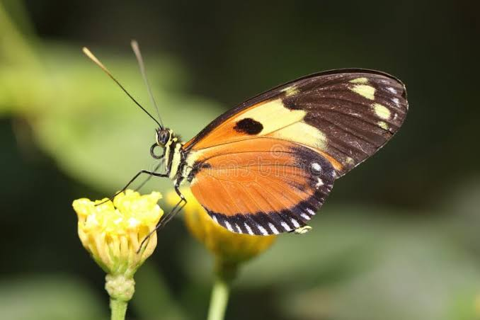
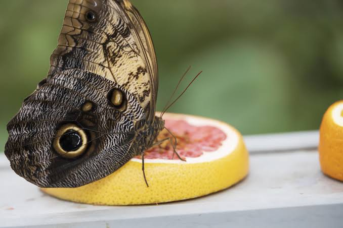
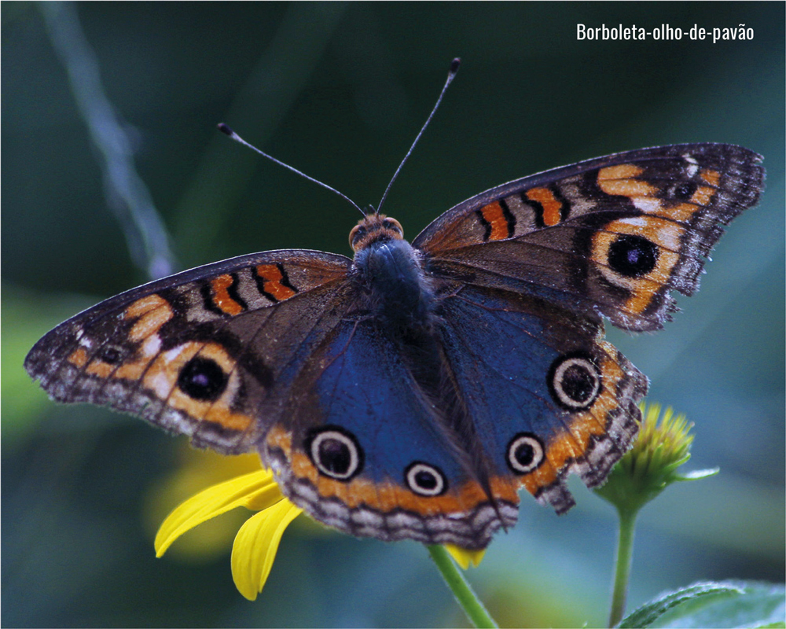
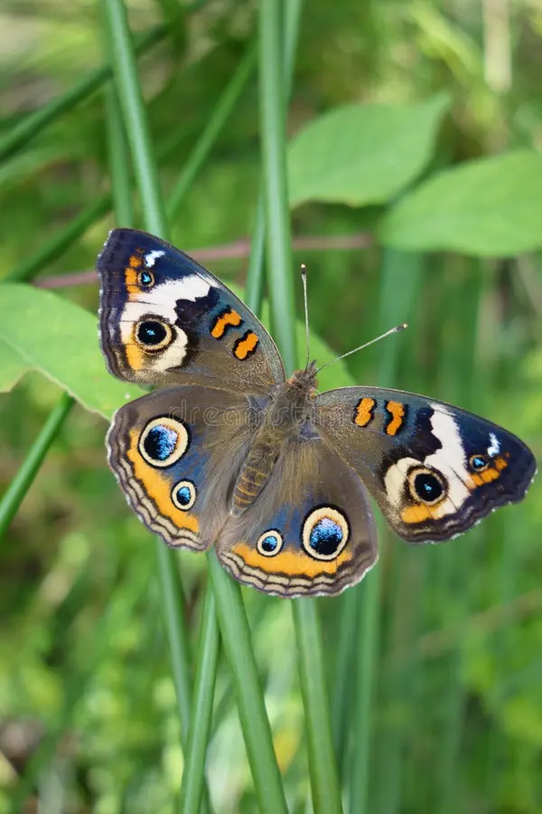
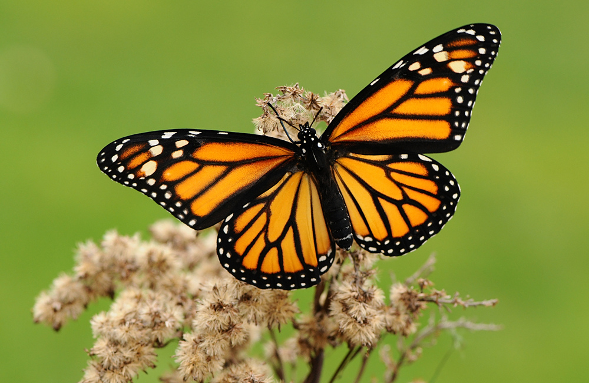
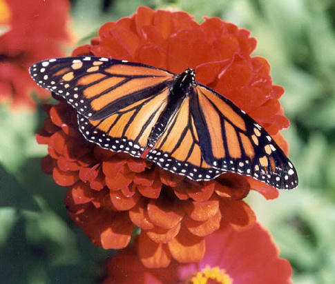
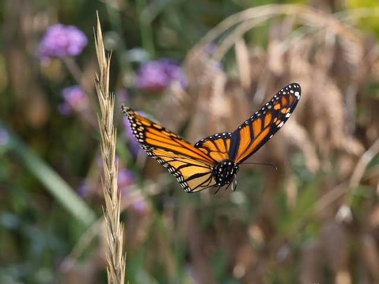

As borboletas usam a boca para sentir o gosto das coisas?

Mito! Elas possuem receptores de sabor nas patas para testar se uma planta é boa para pôr ovos.

As borboletas usam a boca para sentir o gosto das coisas?

Mito! Elas possuem receptores de sabor nas patas para testar se uma planta é boa para pôr ovos.

As cores vibrantes das asas das borboletas são feitas de tinta?

Não! As asas são cobertas por milhares de escamas microscópicas que refletem a luz.

Borboletas vivem por apenas 24 horas?

Mito! A maioria vive de 2 a 4 semanas, e espécies como a Monarca podem viver até 9 meses!
Borboletas conseguem voar em qualquer temperatura?

Não! Elas precisam do calor do sol para aquecer seus músculos. Se fizer menos de 13°C, elas não voam.